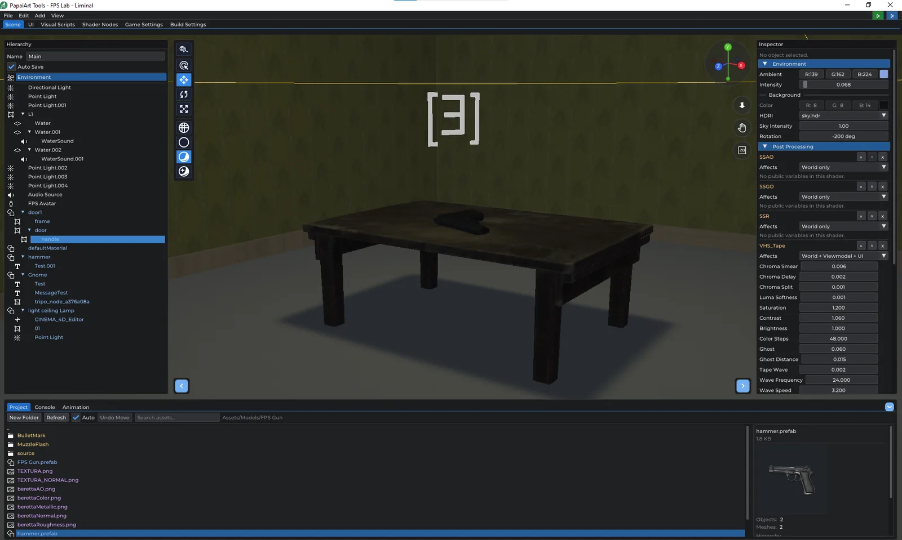
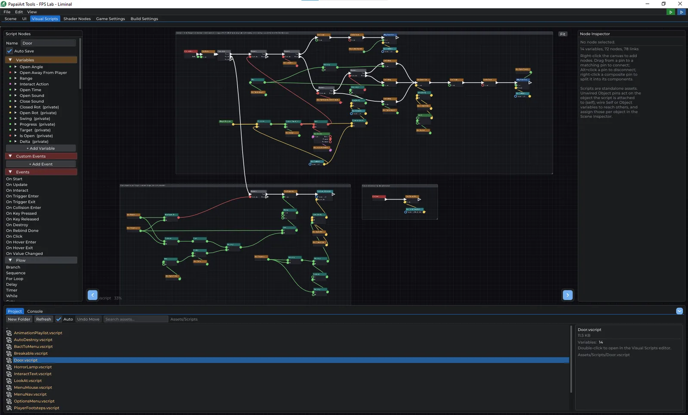
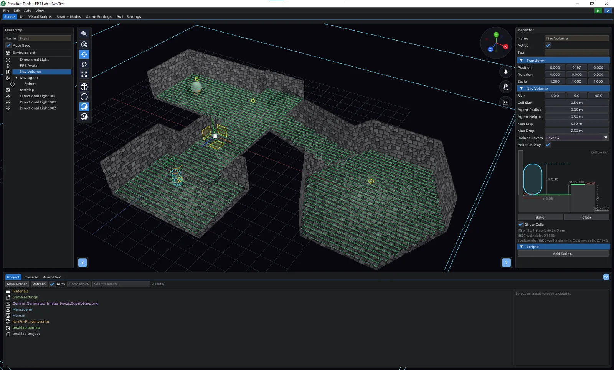
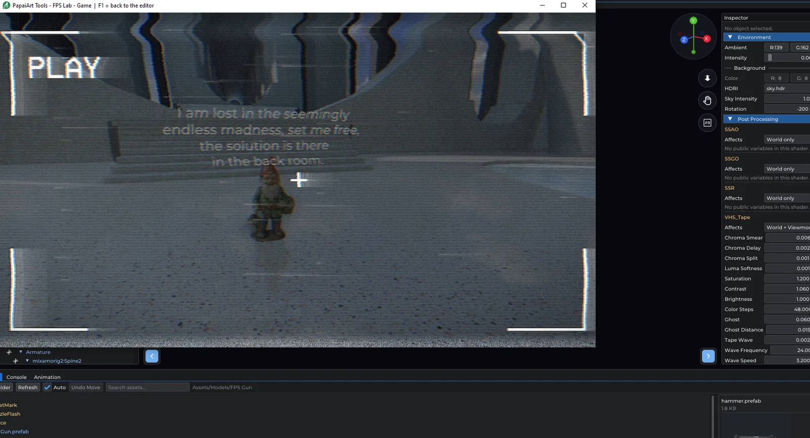
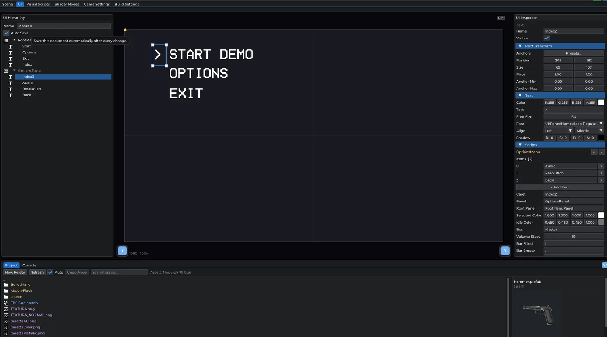

PapaiArt ToolsFPS Lab
Assemble a scene, wire up behaviour with visual scripting, press Play, and export a standalone Windows game. Native Vulkan, fast startup, no project import step.
In developmentv0.8.8WindowsFree · Pay what you want
Assemble a scene, wire up behaviour with visual scripting, press Play, and export a standalone Windows game. Native Vulkan, fast startup, no project import step.

FPS Lab is a game engine where you build the game by connecting visual nodes instead of writing code. The player controller, the weapon handling and most of the built-in tooling are built for first-person games. The scene, scripting, UI and build systems are general, so third-person games, walking sims and puzzle games work too.
It's aimed mostly at people making their first game. Everything happens in one editor window with a few tabs. A beginner handbook starts from an empty scene and works up to a zombie shooter and a horror game. The first project, a room you can walk around in, takes about ten minutes.
The engine is free, with no paid unlock, no watermark on your builds and no revenue share. What you make is yours: an exported game is a standalone program with no engine, launcher or licence check behind it. Development is funded by the community.
Build your level from a hierarchy of objects, bring in your own models, and pull in finished maps from the other PapaiArt tools.

Events, flow, variables, arrays and globals: enough for pickups, an inventory, enemy AI and keeping score.

Place a Nav Volume, press Bake, and a Nav Agent walks (or flies) to wherever you send it.

Shared PBR materials, node-built material effects and screen effects you can see live in the editor.

Keyframe anything on a timeline, cut long takes into clips and blend between them.
Menus, scene flow and a single build step that produces a real Windows program.

Builds for more platforms are next on the list.
New nodes, prioritised by what people ask for.
More chapters and example projects for beginners.
4 updates since August 7, 2026. Newest first.

This update is all about the animation system. Three things, and each one removes a workaround you were probably already writing. The Play Animation node has a new Blend input: how long, in seconds, the object takes to…

Mesh objects can now carry cheaper stand-in geometry. LOD0 stays SceneObject::mesh ; the extra levels live in a new lods list, each with the relative screen height below which it takes over. Screen height rather than…

Prefab Mode got a new toolbar toggle. With it on, the camera preview no longer shows a selected camera object — it looks through the player's eye : the stage origin is the eye the weapon hangs off, framed with the…

Until this build, an enemy in FPS Lab could only walk the straight line to you. That is what Move Towards does, and it is what the zombie in the handbook's project 4 does — which works beautifully in an open room and…
A free game engine for first-person games. Build by connecting nodes, not by writing code.